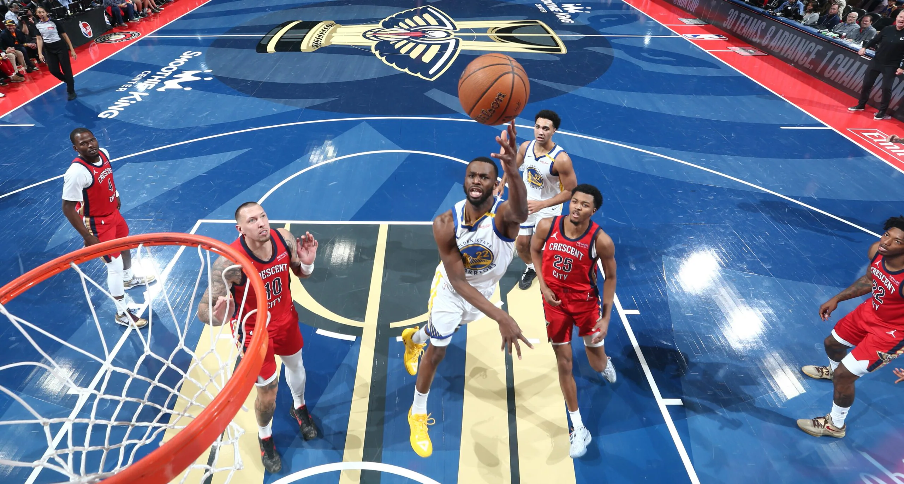

After last week’s 77-72 loss to the Kentucky Wildcats, freshman phenom Cooper Flagg and his teammates needed to answer questions against the best of the best on their schedule. They got their chance with a road game against No. 17 Arizona, a team that beat the Blue Devils in Cameron Indoor Stadium just last season. The biggest narrative surrounding Friday’s game, however, centered around Arizona’s star player. Caleb Love, a former North Carolina Tar Heels star, had already played Duke eight times over the previous four seasons. He won five times, including the infamous Final Four victory in 2022 that ended Coach K’s tenure in Durham. Flagg made sure all of those trends reversed in Tucson, scoring 24 points to lead Duke to a 69-55 victory over the Wildcats. Here are our five biggest takeaways from Duke’s first ranked victory of the 2024-25 men’s basketball season.
